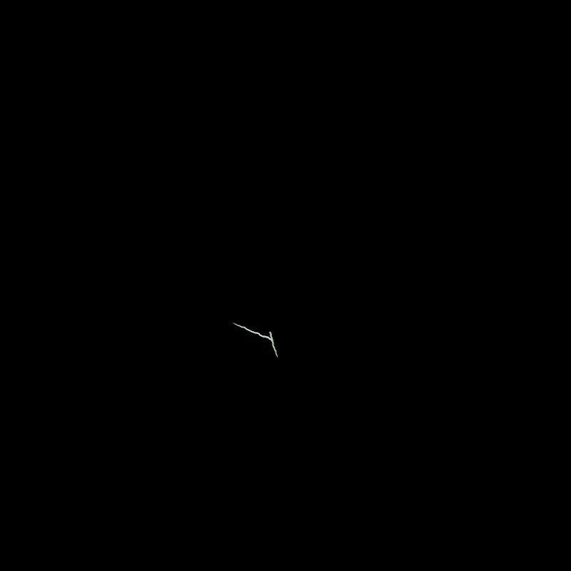
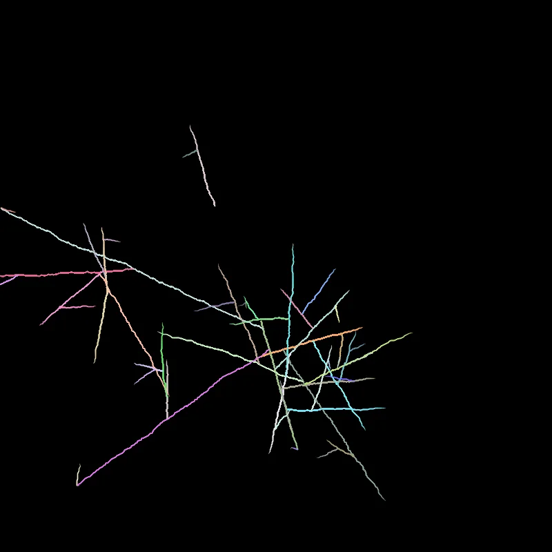
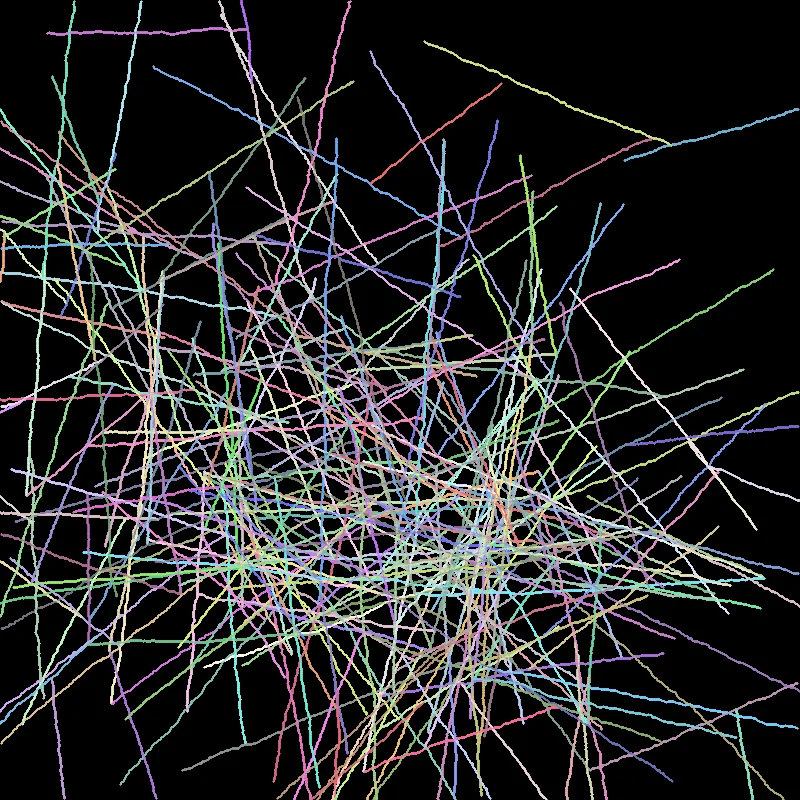

DES 111 · SPRING 2025 · PROJECT 04 · PROCESSING / GENERATIVE INTERACTION
Cool Color — Branching Generative Art
User input begins a system of growth and unpredictable direction.

01 / OVERVIEW
Concept & approach
A mouse-triggered branching system influenced by generative-art processes. New branches grow from user-selected points and change direction under randomized rules.
The artist-study documents discuss Jared Tarbell’s work and emergent complexity. This Processing sketch starts new colored branches when the canvas is clicked and saves TIFF captures with the S key. The supplied captures show sparse stages of the piece.
02 / SELECTED OUTPUTS
From the original coursework


03 / TOOLS & SOURCE
Built with Processing
Processing (.pde) · mouse input · randomized growth · branch system
Original .pde source files are provided for inspection. Opening the files in Processing may require a compatible Processing installation.